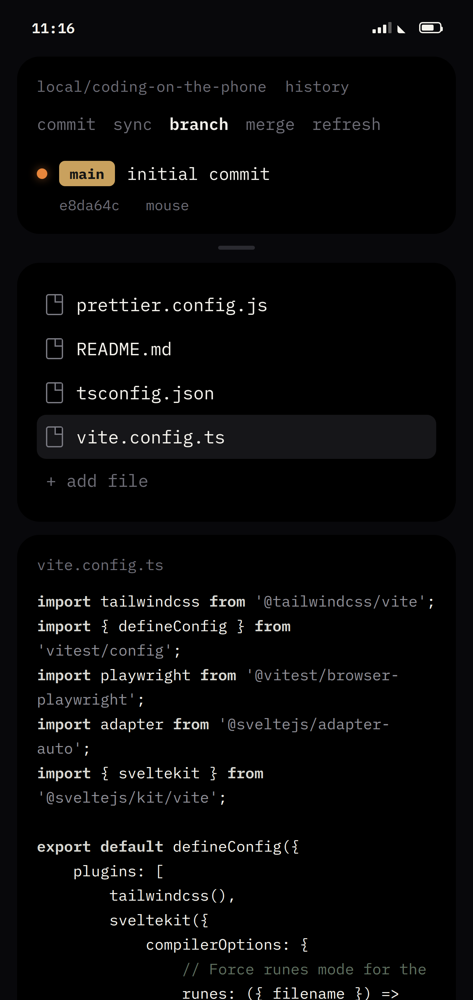
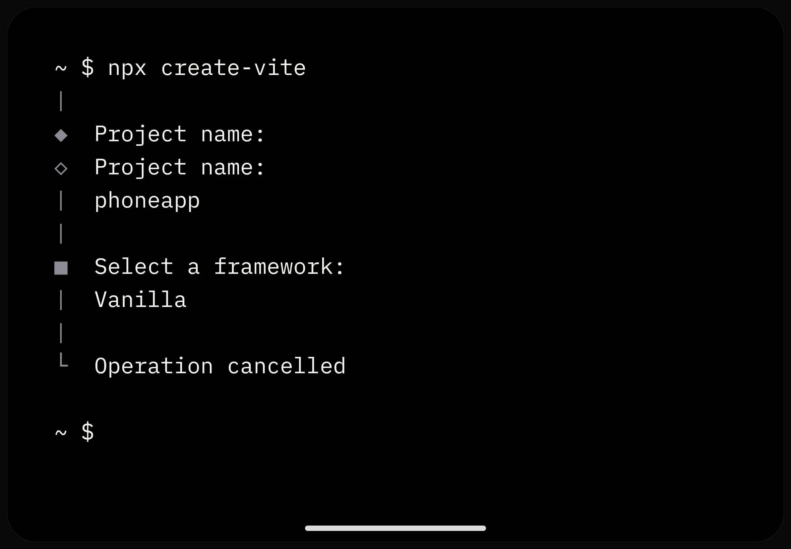
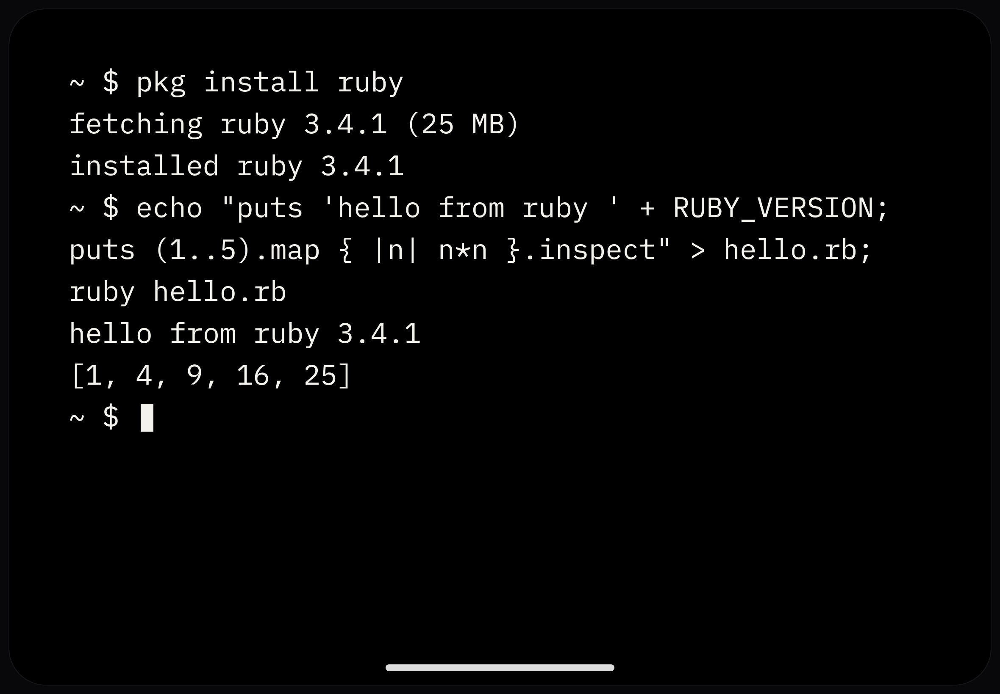

Edit · commit
Files to graph
Browse the tree, edit in place, and read the commit history with colored rails, all on one ring.
Mouse is a mobile coding app. A gesture shell where the whole
development environment lives: swipe between editors, pinch workspaces
open, and run real node and git against your GitHub repos.
Drag the flock · the app screens cycle on their own
Files, editor, terminal, and the commit graph are containers on a ring. Everything a builder needs, one swipe away.

Browse the tree, edit in place, and read the commit history with colored rails, all on one ring.

Scaffold with npx, pipe commands, run scripts. The shell is verified against real /bin/sh.

Pull toolchains and packages, then run them where you are. No server in the middle.
Lanes show what is open; the rest wait in reserve. A commit moves the same view to a new offset, no reload flash.

The shell owns navigation. Content owns reading and typing. Conflict is settled once, everywhere.
Swipe a lane to the next container on the ring — files, editor, graph, terminal.
Drag from the screen edge to travel between rings, or mint a fresh one.
Two fingers open a lane or close one. Pinch the last lane and the ring folds.
Pull the capsule between lanes to resize. Springs settle with mass.
Trees scroll, editors edit, terminals take keystrokes. Vertical stays with content.
While the editor is focused, every drag on it belongs to the text — selection and caret first.
The gesture law. One-finger horizontal drags and all two-finger gestures belong to the shell, everywhere. Content gets taps, vertical scrolling, and the keyboard.
No server in the middle. GitHub talks to the phone. The engines are native.
A from-scratch POSIX-flavored shell: pipes, redirects, functions, $(…), globs, scripts — verified against real /bin/sh.
JavaScriptCore Node layer: npm install, CommonJS + ESM, TypeScript, sockets, HTTP, workers, and full-screen TUIs.
Native object store, packfiles, smart-HTTP fetch/push, and three-way merge — interoperable with the real CLI.
OAuth Device Flow. Tokens in the Keychain. The GitHub container is the same session everywhere.
Clone via tarball or start a local project. One workspace per repo, shared across rings.
Tap the file. Type. Autosave. Shared buffers mean two rings on one file stay live.
The graph toolbar drives the native engine. Sync pushes; pull is an explicit terminal command.
A native mobile IDE for iOS and Android. The development environment lives in a gesture-driven shell: rings of containers for files, editor, commit graph, and terminal.
No. Two native apps — SwiftUI on iOS/iPadOS, Jetpack Compose on Android. No Capacitor, React Native, or Flutter bridge.
Yes. A Node-compatible runtime on JavaScriptCore, with npm from the real registry, sockets, HTTP, and packages like vite, webpack, jest, and express verified against real node.
Mouse ships a from-scratch engine: loose objects, packfiles, refs, merge, and GitHub smart-HTTP. Repositories it writes pass git fsck.
The source is on GitHub today. Build the iOS app with Xcode + xcodegen, or the Android app with Gradle. Release packaging is tracked in the repo.
Product branches on the roadmap cover AI pair editing and background agents as containers. The shell’s multi-view model is the substrate; those slices land when feel-tested.
Clone the repo. Generate the project. Run.